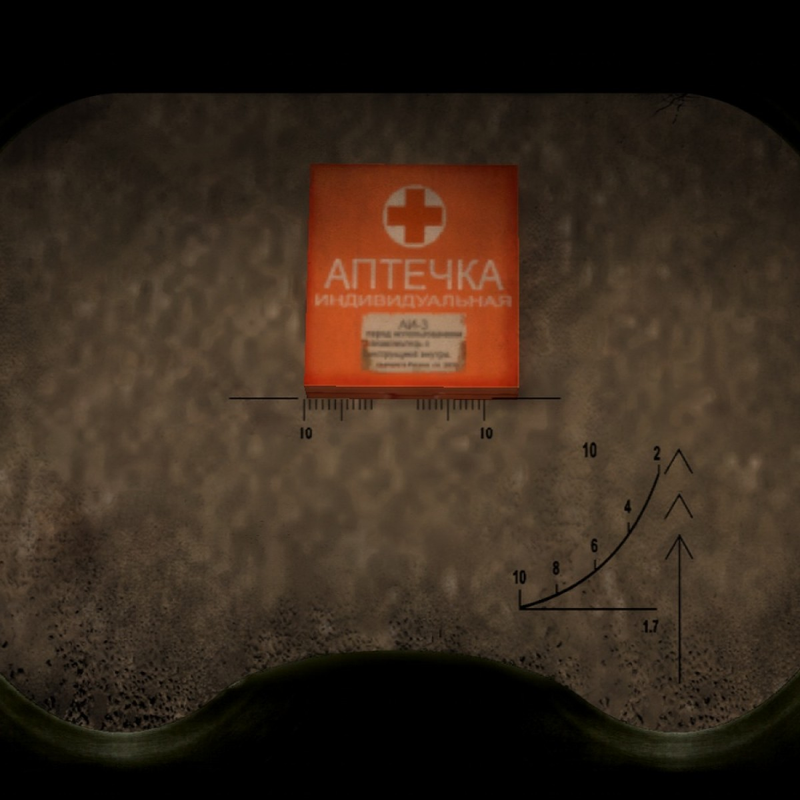

В домашней аптечке должны быть обезболивающие и жаропонижающие препараты, лекарства от аллергии, сорбенты, перевязочные материалы и средства от ожогов, а также лёгкие успокоительные.
-
Противовоспалительные средства:
Наиболее эффективными и безопасными считаются те, действие которых определяет парацетамол или ибупрофен. Часто приобретают обезболивающие и жаропонижающие препараты Нурофен, Эффералган и Панадол.
Не нужно покупать отдельно лекарства, которые снижают температуру и облегчают боли, ведь современные противовоспалительные средства успешно решают обе эти задачи.
-
При простуде:
Чтобы как можно быстрее улучшить самочувствие, в аптечку следует положить капли или спрей для носа Тизин или Галазолин, пастилки от болей в горле Анти-ангин или Стрепсилс, а также препараты от боли
и жара в виде сиропов или суспензий — Эффералган или Парацетамол.
-
Сорбенты:
Нужны также сорбенты — группа препаратов, которые врачи назначают при отравлениях. Если принимать их в течение дня, можно избавиться от всех симптомов интоксикации — приступов тошноты и рвоты, диареи, вздутия живота, бурления
и урчания. Самый популярный вариант — активированный уголь. В домашнюю аптечку нужно обязательно положить один из этих сорбентов: Смекта, Полисорб, Энтеросгель или
Лактофильтрум.
-
Ранозаживляющие и противоожоговые средства:
В быту можно получить термические и химические ожоги, ссадины, проколы или порезы, ранки и отёки от укусов насекомых, солнечные ожоги. В этих случаях нужны универсальные наружные средства с противовоспалительным, противоотёчным,
обезболивающим и ранозаживляющим действиями на основе декспантенола — Бепантен, Пантенол, Д-Пантенол. От зуда после укусов насекомых поможет Фенистил. Чтобы в ранки не попали болезнетворные бактерии,
обычно втирают Левомеколь или Левосин.

-
Успокоительные
В стрессовой ситуации нередко можно всю ночь проворочаться в постели без сна. Человеку, который часто нервничает и испытывает беспокойство, лучше положить в аптечку лёгкое успокаивающее средство. Например, Валидол, Корвалол,
Валокордин или
Ново-пассит. Таблетки или настойки на основе пустырника, валерианы, пиона также быстро успокоят, устранят тревожность, беспокойство, волнение и расстройства сна.
-
Препараты от аллергии:
Даже если у вас нет аллергии, лучше подстраховаться и купить в аптечку упаковку противоаллергенного препарата. Не следует покупать средства, которые могут сопровождаться выраженным побочным эффектом, например постоянной сонливостью.
Хороший вариант — современные средства Эриус, Зодак, Зиртек. Аллергики также покупают таблетки, капли и сиропы, которые быстро справляются с заложенностью носа, долгим чиханием и обильным слезотечением.
Они помогают предотвратить развитие опасной системной аллергической реакции после укуса насекомых.
Cупрастин, кларитин, тавегил - препараты 1-го поколения, они начинают действовать быстро, но часто дают сонливость, заторможенность. Поэтому после приема не рекомендуется садиться за руль. Эриус, кестин, зодак - препараты 2-го поколения, которые не вызывают
сонливости и нарушения концентрации внимания, но поскольку у них, как правило, более мягкое действие на организм, эффект снятия аллергических реакций может наступать чуть медленнее, чем у препаратов 1-го поколения.
-
Перевязочные вещества:
В домашней аптечке должен быть бинт. Лучше стерильный, среднего размера — 10 см х 5 м, 14 см х 7 м — и в индивидуальной упаковке. Дополнительно нужен набор стерильных салфеток, небольшой рулончик стерильной ваты, эластичный
тянущийся клейкий бинт и 10–20 лейкопластырей.
Дома также могут понадобиться спиртовые одноразовые салфетки. Достаточно протереть ими место царапины или пореза, чтобы остановить кровь и продезинфицировать кожу.